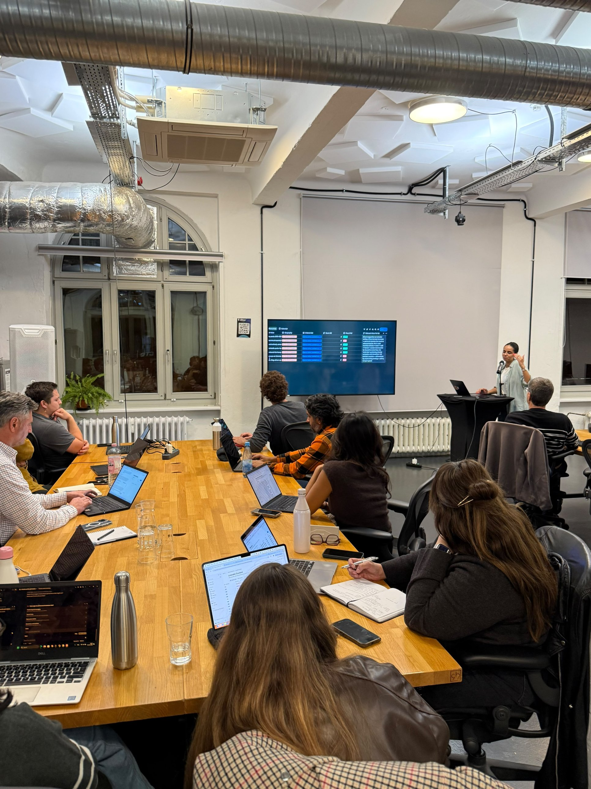
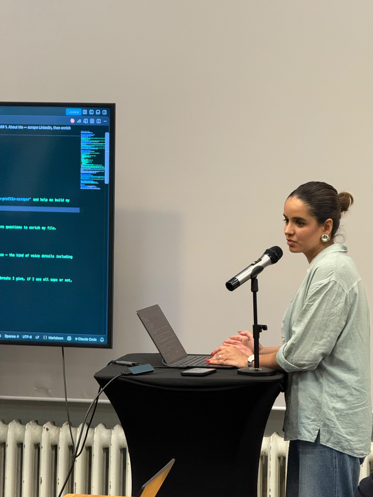
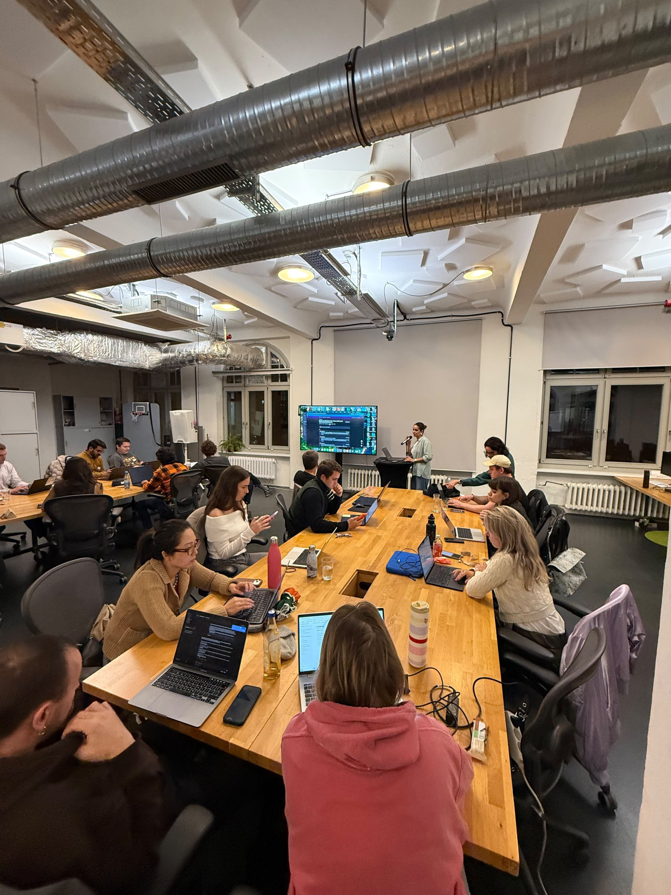
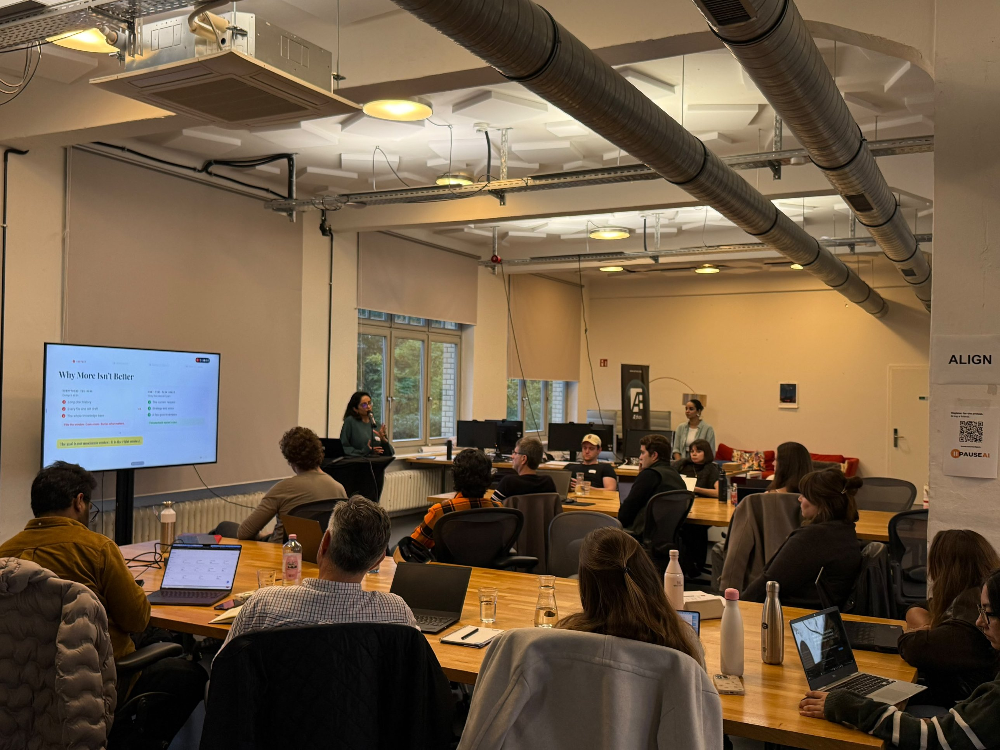

Back by popular demand, this is our third Claude Code for Marketing cohort. The first two filled up fast, so this time we're taking it online.
Most people use AI to write one post at a time. You paste a prompt, get something generic, then spend time rewriting it. That isn't a content system, it's just a slightly faster blank page. In this workshop, you'll build the system underneath, one that creates a whole month of content with one push. Using Claude Code and Notion, you'll build a reusable AI-powered content workflow that understands your brand, your voice, and your goals, so every new piece starts with context instead of scratch.




Learn how to build and structure reusable .md skills for content creation and marketing use cases, so Claude Code generates consistent, high-quality outputs every time.
The full campaign, end to end: Notion connected as your content database, ideas turned into a real plan, drafts for Instagram, LinkedIn, blog, and newsletter from one brief, everything moved between Claude Code and Notion, and a report on what went out and what's worth doing more of.
No coding background needed. If you can describe what you want in plain English, you can do this.
7+ years across social, brand, and influencer marketing. Brand strategist turned non-technical founder who built SocialFlo, an AI content platform, using Claude Code. Runs Co-Work &.
Staff Software Engineer and Tech Lead, 14+ years, formerly Adobe and Wayfair. Built data pipelines processing 60M+ events an hour, holds a patent for a UI auto-tagging feature. The person who actually explains context windows, tokens, and cost.